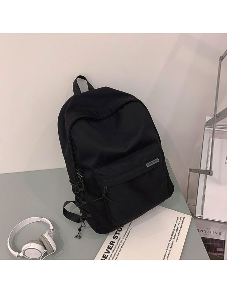
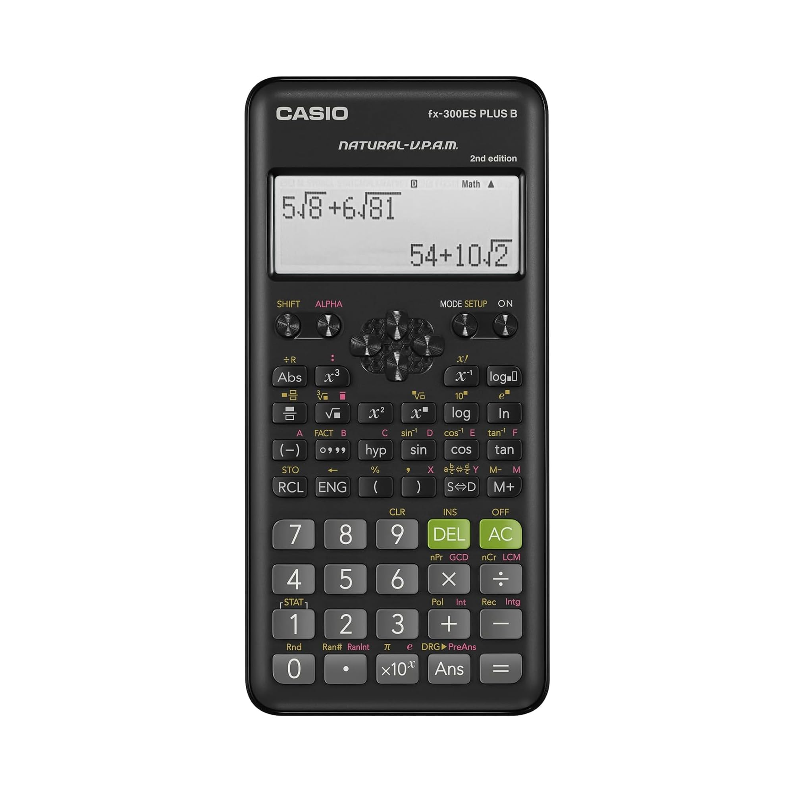
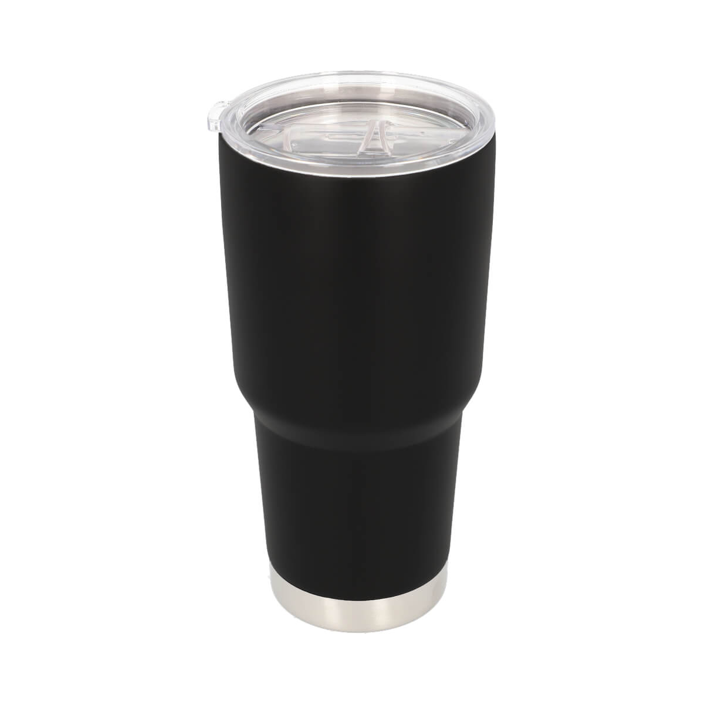

PERDIDAMochila Negra
Mochila negra de lona con pines metálicos en la bolsa frontal. Contiene cuadernos de cuadrícula y estuche negro.
Sistema comunitario de rastreo y recuperación de pertenencias.

PERDIDAMochila negra de lona con pines metálicos en la bolsa frontal. Contiene cuadernos de cuadrícula y estuche negro.

ENCONTRADACalculadora Casio fx-991EX con tapa deslizable gris. Tiene una etiqueta con iniciales en la parte trasera.

RECUPERADOTermo de acero inoxidable color azul marino de 750ml con calcomanías de distribuciones de Linux. Entregado a su dueño.
Completa los datos para publicar un nuevo reporte en el tablero.